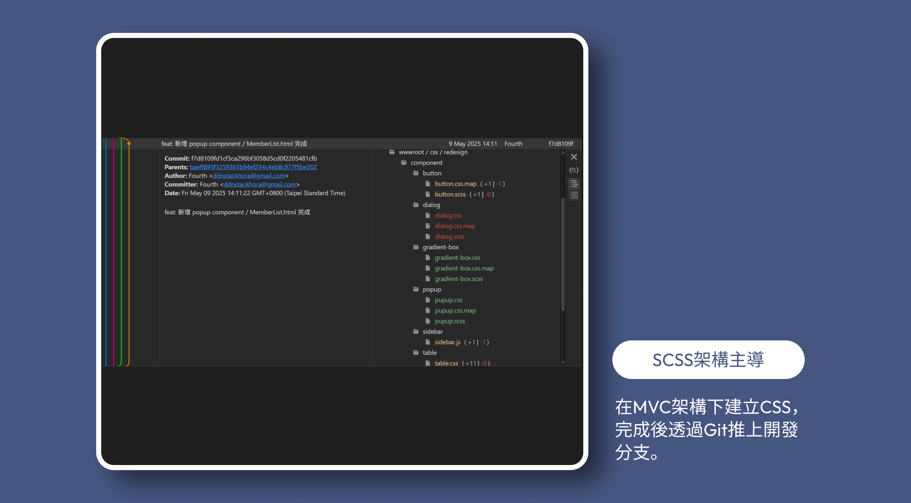

UI RWD / SAAS ERP
針對企業內部高流量後台進行 UI/UX 重構。本專案挑戰在於預估156天極限壓縮時程內（92天），整合舊有功能並同步開發新需求。
-
◆
挑戰：整合既有舊系統與新功能需求，重建程式碼搬運導致的視覺風格與佈局混亂。
-
◆
目標：在有限資源下，重整 UI 架構並優化操作體驗，使後台系統邏輯與視覺保持一致。
UI/UX設計師 x1 → 我
全端工程師 x2
我是部門唯一UI/UX設計師，主導介面設計一致性與操作邏輯，同時確保專案開發效率提升。我跳脫單純的設計交付，直接參與前端架構開發：
建立設計系統
使用 Figma 定義規範，並將其轉譯為標準規格化的 SCSS 元件庫。
Git 協作開發
進入 MVC 架構，透過本地分支建立、推送程式碼與解決衝突，減少來回溝通成本，提升整體開發效率41%。
全局 UI/UX 實作落地
直接優化 Razor View (.cshtml) 結構，確保設計稿 100% 還原，並解決 RWD 響應式佈局問題，真正參與設計落地。
我主導的流程革新：
設計系統與Git整合
為了將本次專案的高效合作模式延續至未來維護，我將協作經驗系統化。經量化評估，此流程使整體開發效率提升約 41%。
為了讓工程師安心放權，我制定了嚴格的「程式碼修改白名單」：
-
●
UI/UX設計師權責：解決「同一元件多種樣式」雜訊，模組化按鈕、表單、Popup，確保 100% 統一。
-
●
工程師權責：負責功能與資料邏輯。
-
●
協作機制：若調整樣式需更動結構邏輯，我會留下註解並開單通知工程師。
實踐：
Git同步與模組化SCSS架構
新流程實踐
在泳道圖標準化流程下，我直接掌管專案的視覺層代碼，確保「設計語言」與「程式語言」的無縫接軌。
-
●
Git 透過分支管理與 pull、merge、push以及cherry-pick 等基礎技巧，實現設計與功能的並行開發，大幅縮短功能上線前的UI修正週期。
-
●
SCSS架構主導： 避免多人維護常見的「視覺偏移 (Visual Drift)」與樣式衝突，我建立了嚴謹的分層管理機制：
-
1.
設計系統： 定義全域變數，確保設計一致性。
-
2.
Component 元件： 封裝按鈕、表單、彈窗等可複用元件，落實Component-First思維。
-
3.
頁面樣式 ： 頁面的佈局樣式檔案獨立，並嚴格限制其影響範圍。
 -
-
★
成效： 確立了 CSS 為「視覺邏輯」的核心地位。由設計師統一維護，不僅消除了傳統流程中的「轉譯落差」，更確保了程式碼的潔淨度與可擴充性。若調整樣式需更動到結構邏輯，我會留下註解並開單通知工程師。
Git 模組化SCSS架構展示
模組化實例展示
Popup 模組化： 針對舊系統中樣式破裂且無法關閉的彈跳視窗，我重構了 HTML 結構並套用標準化 CSS。這不僅修復了 UI 錯誤，更讓未來的 Popup 開發時間縮短至原本的 30%。
Git協作與部署實例展示
資訊架構
與響應式設計策略
-
●
導航體驗：固定 Sidebar 寬度並導入階層式選單。
-
●
表格易讀性：保留欄位最佳寬度並搭配水平滾動 (Horizontal Scroll)，優先展示重要數據。
當螢幕小於 767px 時，自動將複雜的表格資料轉換為卡片式 (Card UI) 排列，符合移動裝置垂直瀏覽習慣。
選定擴充性最佳的「統一篩選側欄」模組。將觸發按鈕固定於 Header，側欄容器共用，內容動態注入。
套件與原生元件重構：
極致視覺統合
面臨樣式被封裝在 JS 中的難題。我直接進入 JS 檔案調整參數與 Class，將風格迥異的套件客製化為標準元件。
表單與功能元件的全面統合
針對 select2 多選擇套件、TinyMCE 文章編輯器等進行標準化。透過全域 CSS 覆寫消除視覺差異。
原生元件重構
摒棄原生 Select 標籤，重寫符合 Design System 的下拉選單結構，克服瀏覽器渲染差異。
總結：
設計與開發的橋樑
這個專案不僅是一次介面重構，更是協作模式的革新。透過 Git 同步開發與程式碼實作，成功打破「設計交付 vs 工程實作」的高牆。
- 降低溝通成本：直接修正 UI 細節，減少來回確認時間。
- 消除落地落差：確保最終產品視覺與互動細節分毫不差。
- 提升團隊效率：工程師專注邏輯，設計師全權掌握視覺品質。